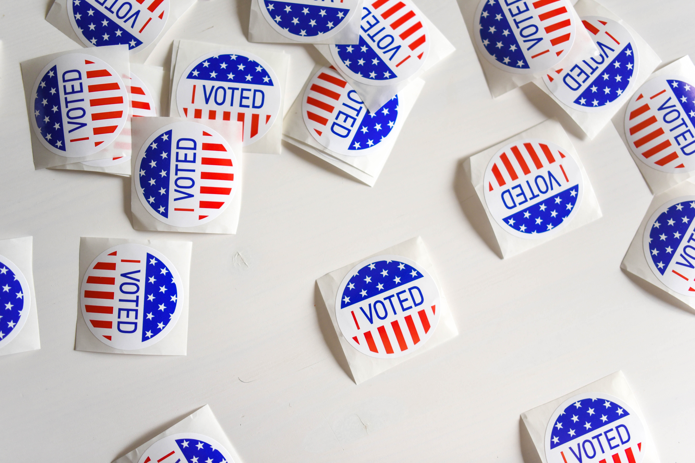

Support Leslie

Do you believe in Leslie’s purpose and want to help her get elected?
If so, THANK YOU so much! Click the Photos below to see the best ways you can help make
election a reality.
Prayer

Pray for wisdom and guidance for her throughout the election. Pray for her family that they would know how to support her.
Finance
Believe it or not, even running a small, local election costs more than one might think. Every dollar donated to her campaign allows Leslie to further reach the community. Every donation helps bring her closer to serving the community.
Spread the Word

Throughout the campaign, Leslie will have flyers to distribute to local residents, and everyone can help with this! Do you have a business or live on a busy street and want to display one of her yard signs? We can hook you up.
Register to Vote
It’s easy to register to vote. Click here for the Bullitt County Clerk’s website to see requirements and follow the link to download a voter registration card.